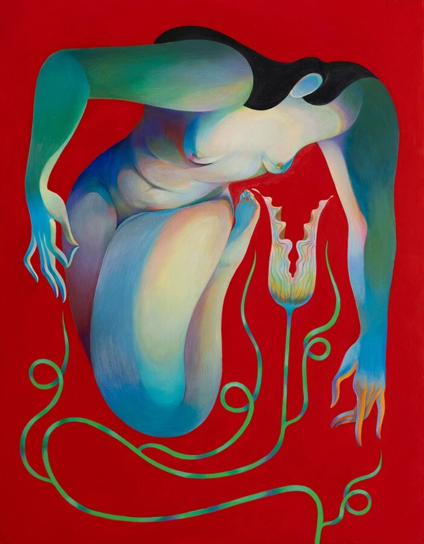

Feel Free
Joy Machine is pleased to present Feel Free, a group exhibition featuring new works by Rachel Hayden, Paulina Ho, Hanna Lee Joshi, and Jeremy Miranda. The opening reception will be held on Friday, May 15, from 6 to 8 p.m. RSVP: https://luma.com/mft1i4iz
Attempting to create order and find clarity amid chaos is human instinct. Since time immemorial, we’ve endeavored to make sense of a world in which reason and certainty are never assured. Change, as the saying goes, is the only constant, which means notions of autonomy or control are a subjective fantasy rather than a concrete reality. In Feel Free, we witness four artists grappling with this enduring paradox. Each surrenders to the inevitability of change and focuses on the small instances of understanding that, for a brief moment, allow us to believe we might have figured it out.